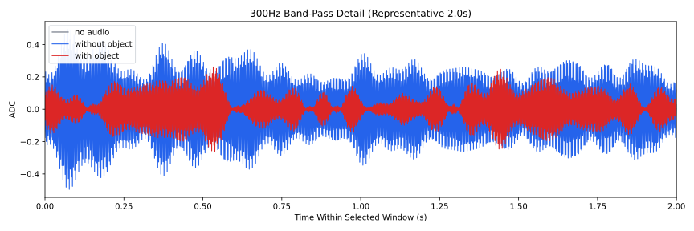
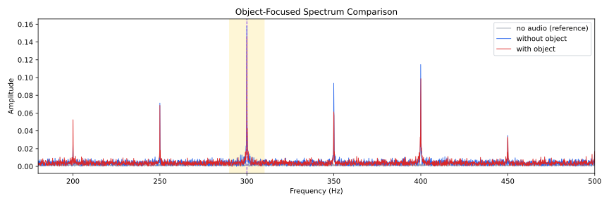
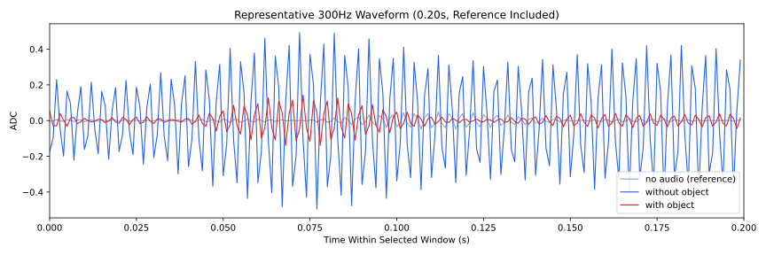
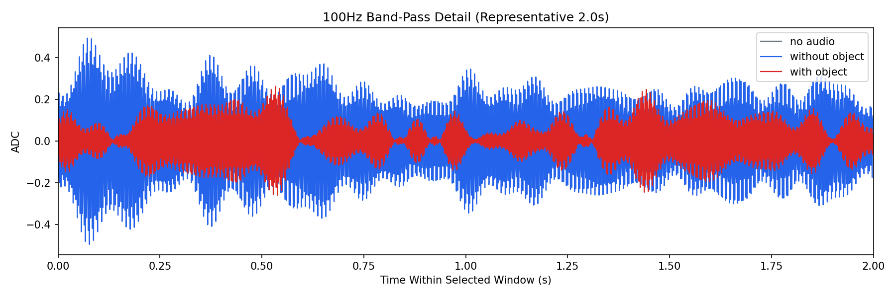
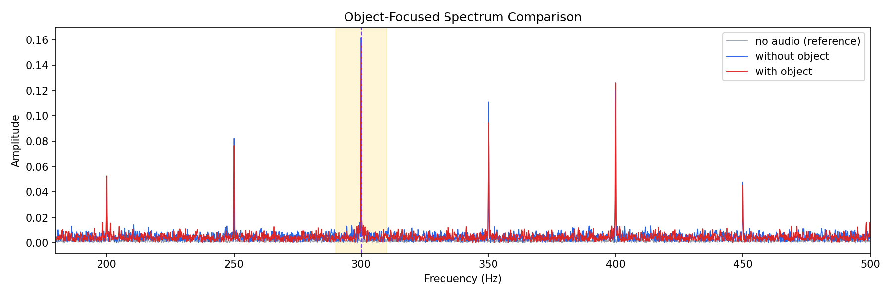
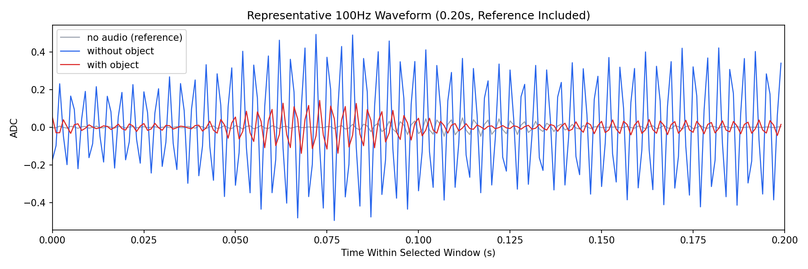

Background: F:\项目类文件夹\异物检测4.10\Data_Dual\frequency_sweep\0300Hz\repeat_05\raw\no_audio.csv
Without object: F:\项目类文件夹\异物检测4.10\Data_Dual\frequency_sweep\0300Hz\repeat_05\raw\without_object.csv
With object: F:\项目类文件夹\异物检测4.10\Data_Dual\frequency_sweep\0300Hz\repeat_05\raw\with_object.csv
| Metric | 无音频 | 100Hz无异物 | 100Hz有异物 | 无异物/无音频 | 有异物/无异物 | 有异物/无音频 |
|---|---|---|---|---|---|---|
| centered_rms | 0.076216 | 0.312269 | 0.287250 | 4.0971 | 0.9199 | 3.7689 |
| raw_target_amp | 0.000897 | 0.161684 | 0.157554 | 180.2621 | 0.9745 | 175.6585 |
| filtered_rms | 0.016422 | 0.152289 | 0.131187 | 9.2734 | 0.8614 | 7.9885 |
| filtered_target_amp | 0.000897 | 0.161684 | 0.157554 | 180.2621 | 0.9745 | 175.6585 |
| filtered_energy_ratio | 0.046426 | 0.237836 | 0.208576 | 5.1229 | 0.8770 | 4.4927 |
| window_filtered_target_amp_mean | 0.008719 | 0.186900 | 0.169203 | 21.4364 | 0.9053 | 19.4067 |
| window_filtered_target_amp_std | 0.006113 | 0.087714 | 0.052358 | 14.3490 | 0.5969 | 8.5652 |





